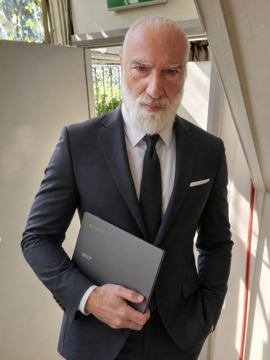

|
G A G Systems, MESSAGE FROM THE ARCHITECT George A Georgopoulos (G A G Systems - Architect)  Hello Dear G A G Systems - WEB OS v1 Beta USER This message is about new changes to G A G Systems - WEB OS 1)ACCESS & USE We Have used Authentication / login System and didn't work, This isn't the Right Approach for Software Startup / New Software, So our Software is again According to the terms mentioned on our Software here and on all our websites, At the moment you have FREE ACCESS, Meaning as a User you can use our software for Free, Policies such as Subscriptions, usb,still stand if you wish to choose, Also in this message we ADD Donations, you can donate by contacting us on our Email: GeorgeGeorgopoulosAudio@Gmail.com Please note, all "G A G Systems - WEB OS v1 Beta" where ever it is hosted is owned by Mr George A Georgopoulos and "copyright (c) George A georgopoulos 2026 All Rights Reserved" Kind Regards George A Georgopoulos (G A G Systems - Architect) Continue Here! |